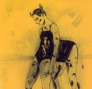

| Artist: | Quikion |
| Title: | Ramadan |
| Label: | Poseidon/Gazul Records PRF-018/GA 8676.AR |
| Length(s): | 45 minutes |
| Year(s) of release: | 2005 |
| Month of review: | [10/2007] |
| 1) | Moon And A Bride | 3.06 |
| 2) | Ramadan | 6.05 |
| 3) | The Cracked Harmanium Of CHOTABARU | 2.34 |
| 4) | Die Ballade Von Der Höllen-Lili | 2.56 |
| 5) | Guessing Song | 3.20 |
| 6) | Cha-ri-ne | 5.05 |
| 7) | Spellbound | 5.07 |
| 8) | Sirba D'Accordeon | 4.04 |
| 9) | The Cuckoo | 3.26 |
| 10) | Concertina Blues | 3.03 |
| 11) | Heaven Knows | 5.14 |
| 12) | Kondratiev Song | 2.14 |
Die Ballade Von Der Höllen-Lili is a short and faster tune, which more signs of the avant-garde. But rock is still totally absent. Guessing Song is a soft melodious song, with acoustic guitar and vocals. This is more like a traditional asian song (I have to admit not being well-versed, but it reminds me a bit of a song like Denpasar Moon). The vocals are good, quite natural and intimate.
On Cha-ri-ne, the mood is a bit more sinister. The vocalist again manages well, even if the listener is 'close-up' and any insecurity in the voice would be easily heard. The music stays rooted in folk, this being more a darker type ballad. Spellbound has elements of Middle-Eastern music, with the accordion giving the music a 'desert' atmosphere. Sirba D'Accordeon not surprisingly also contains a fair dose of accordion, with the result being very gypsy like. The Cuckoo continues in the vein of the album, this time with glockenspiel as an additional feature. Concertina Blues follows its instrument, while Heaven Knows is again a bit faster and lively. The closer is Kondratieve Song, which is tango like.